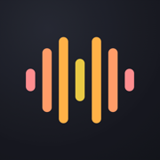
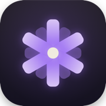

GGG Shop
Browse the catalog
Independent audio software · Est. 2025
Catalog
3 products · macOS & iOS-
LL-01
ListenLink
Stream your master bus to a web link anyone can open in a browser — no accounts, no apps for the listener.
v0.3.0 · Live Buy — $3 -
NB-02

Notable
Voice memos you can transpose — record, pitch-shift without changing timing, drop markers, export MIDI.
v1.1 · Live Get — Free -
BL-03

Blossom
One finger, full chords — hold a chord key, play a note, and the voiced chord goes straight to your synth.
v2.1.1 · Live Get — $0+